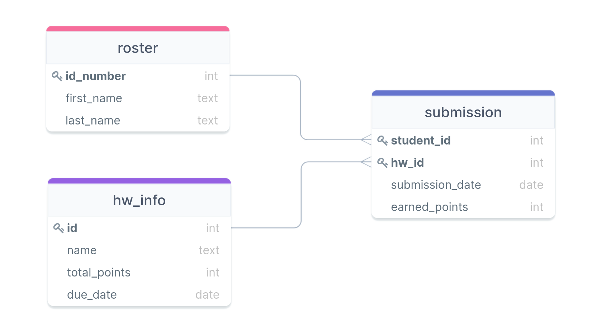

Jed Rembold
Tuesday, February 8, 2022
Given the table (named employees) to the
right and the query immediately below, what would the output table look
like?
SELECT p1.name, p2.name
FROM employees as p1
LEFT JOIN employees as p2
ON p1.superior id > p2.id
ORDER BY p1.name LIMIT 2;| id | name | superior_id |
|---|---|---|
| 1 | Bob | NULL |
| 2 | Frank | 1 |
| 3 | Kelly | 1 |
| 4 | Anne | 3 |
| 5 | Tiffany | 2 |
| 6 | Henry | 4 |
| name | name |
|---|---|
| Anne | Kelly |
| Bob | NULL |
| name | name |
|---|---|
| Anne | Kelly |
| Frank | Bob |
| name | name |
|---|---|
| Frank | Bob |
| Kelly | Bob |
| name | name |
|---|---|
| Anne | Bob |
| Anne | Frank |
YYYY-MM-DD to
the table name to make it easier to find later what your latest version
is.CONSTRAINT constraint_name CONSTRAINT_TYPE CONSTRAINT_CONDITIONSCHECK constraint is perhaps the most
straightforward, in that it just checks to see if a certain condition is
trueCREATE TABLE example (
col1 INT CHECK (col1 > 0),
col2 INT,
col3 INT,
CONSTRAINT second_constraint CHECK (col2 > col3)
);NOT NULL constraint is only applied
to columns, not to the entire table!CREATE TABLE example (
col1 INT NOT NULL,
col2 INT
);CREATE TABLE example (
col1 INT UNIQUE,
col2 INT,
col3 INT,
CONSTRAINT uniq_pair UNIQUE (col2, col3)
);Given the table created as seen below, which insertion command would complete successfully?
CREATE TABLE uc (
id_num INT UNIQUE NOT NULL,
prod_name TEXT UNIQUE,
price NUMERIC(5,2)
wholesale NUMERIC(5,2),
CHECK (price > wholesale),
CHECK (price >= 0)
);INSERT INTO uc VALUES
(1, 'Steak', 3.22, 5.00),
(2, 'Beans', 4.12, 2.50));INSERT INTO uc VALUES
(1, 'Steak', 3.22, 1.23),
(2, NULL, 2.65, 1.26));INSERT INTO uc VALUES
(1, 'Steak', 3.22, 2.78),
(NULL, 'Beans', 4.12, 2.50));INSERT INTO uc VALUES
(1, 'Steak', -3.22, -5.00),
(2, 'Steak', 4.12, 2.50));UNIQUE and
NOT NULL is so common that such a constraint
gets its own name: the primary keySERIAL data types are great for
this, or some people prefer to use UUIDsCREATE TABLE example (
col1 TEXT PRIMARY KEY,
col2 INT
);CREATE TABLE example (
col1 TEXT,
col2 INT,
col3 INT,
CONSTRAINT comp_key PRIMARY KEY (col1, col2)
);REFERENCESCREATE TABLE example2 (
col1 TEXT PRIMARY KEY,
col2 INT REFERENCES example (col1)
);CREATE TABLE example2 (
col1 TEXT PRIMARY KEY,
col2 INT,
col3 INT,
CONSTRAINT fkey_pair FOREIGN KEY (col2,col3)
REFERENCES example (col1,col2)
);NULL or the column default...
col2 INT REFERENCES example ON DELETE CASCADE
col3 INT REFERENCES example ON DELETE SET NULL
...